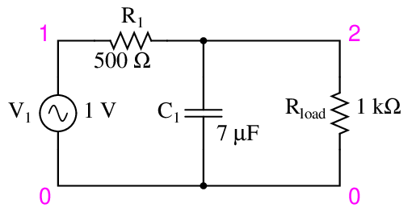
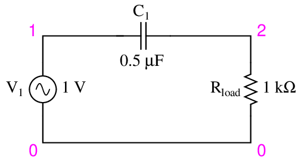

滤波器基础：RC 电路的时域与频域推导¶
RC 滤波器只有电阻、电容两个元件，却能把元件方程、微分方程、复数分压、幅频响应和相位响应串起来。本节先给出结论，再逐步说明结论从哪里来。
1. 核心结论与适用条件¶
以下首先假定：、，元件理想、线性且参数不变；输入由理想电压源提供，输出端没有额外负载，或测量仪器的输入阻抗足够高。
| 项目 | RC 低通 | RC 高通 |
|---|---|---|
| 连接方式 | 电阻串联，电容接公共参考端，输出取电容两端 | 电容串联，电阻接公共参考端，输出取电阻两端 |
| 时间常数 | ||
| 零初始条件下的传递函数 | ||
| 截止频率 | ||
| 直流稳态 | 输出等于输入 | 输出为零 |
| 时的电压幅度比 | ||
| 时的输出相位 | 滞后输入 | 超前输入 |
两个限定不能省略
传递函数定义的是零初始条件下的输入输出关系；有初始储能时，输出还包含初始条件引起的响应。截止频率的幅度门槛是相对于通带增益定义的；本表的理想电路通带增益为 1，所以恰好也是输入幅度的 70.7%。
本节用 表示瞬时电压， 表示正弦稳态相量， 表示拉普拉斯变换。 的单位为秒， 为 Hz， 为 rad/s，且
2. 元件方程与复阻抗推导¶
2.1 电阻、电容、电感的基本关系¶
采用被动符号约定，即电流流入元件电压的正端：
| 元件 | 时域关系 | 正弦稳态阻抗 |
|---|---|---|
| 电阻 | ||
| 电容 | ||
| 电感 |
复阻抗不是另一套物理规律，而是元件微分关系在正弦稳态下的简写。
以电容为例，写成复指数形式：
代入电容方程，求导会带来一个 ：
因此
频率越低，电容阻抗的模越大；频率越高，阻抗的模越小。 应按直流稳态或 的极限理解，不能直接把 当成普通数代入计算。
2.2 阻抗与电抗的关系¶
把阻抗写成
其中 是带符号的电抗：
有些资料把“容抗”写成正的大小 ，那时负号已经包含在 中。需要先确认符号约定，避免重复添加或漏掉负号。
例如串联 RLC 的总阻抗为
阻抗要按复数运算，不能把各阻抗的模直接相加后做分压。
3. RC 电路拓扑与滤波类型¶
3.1 RC 低通：输出取电容两端¶

图 1：公开教材中的 RC 低通电路原图。图中电源 为输入，节点 2 相对节点 0 的电压为输出。原图含额外负载 ；第 4～10 节先令它趋于无穷大（空载），第 11 节再推导实际负载的影响。图中元件值是教材示例，与第 10 节算例不同。原图及许可见文末。
低频时， 很大，串联电流较小，电阻上的压降较小，输出接近输入。高频时， 较小，输出节点更容易经电容连接到公共参考端，输出幅度减小。
这里的关键是电阻与电容共同分压。只说“高频都流进地了”不够准确：公共参考端不是电流消失的地方，电流仍通过电源构成回路。
3.2 RC 高通：输出取电阻两端¶

图 2：公开教材中的 RC 高通电路原图。图中承担输出负载的电阻，对应本节高通模型里的 ；不要再把它当成额外并联负载重复计算。
低频时，电容阻抗较大，串联电流较小，电阻上的电压也较小。高频时，电容阻抗较小，电阻上的电压接近输入。
“电容隔直通交”适合描述这种串联电容的直流隔离作用。含有电容的电路并不一定阻断直流：图 1 的理想低通在直流稳态下就有 。
4. RC 低通的时域方程推导¶
输出端没有额外负载时，电阻电流等于电容电流。根据 KVL：
因为输出取电容两端，，又有
所以
定义时间常数
就得到一阶微分方程
的单位为 。时间常数描述电路动态响应的时间尺度，不是“充满电所需的精确时间”。
5. RC 低通的阶跃响应¶
5.1 电容电压连续性与初始条件¶
假设 之后输入恒定为 ，电容原有电压为 。对于有限幅度的电压阶跃以及非零串联电阻，电容电流不含理想冲激，因此
原因可由电容方程直接看出：
“电容电压不能突变”隐含了没有冲激电流这个条件。理想模型若强加冲激电流，则需要另行处理，不能机械套用上式。
5.2 恒定输入下的通解¶
对 ，微分方程为
令 ，则
乘以积分因子 ：
因此 是常数。由 ，得到
这是应优先掌握的形式：最终值 + 初值与最终值之差 × 衰减指数。它同时涵盖充电、放电和带初始电压的情形。
5.3 0 V 至 5 V 阶跃响应算例¶
若 输入为 0，且电路已达到稳态，那么 。于是
不能仅由“ 输入为零”就断言输出为零；还需要此前已经稳态，或明确给定电容无初始储能。
输出为指数上升，是因为
开始时输入与输出之差大，斜率大；越接近最终值，斜率越小。
| 时间 | 已完成变化量的比例 | 与最终值之差占初始差值的比例 |
|---|---|---|
| 63.21% | 36.79% | |
| 86.47% | 13.53% | |
| 95.02% | 4.98% | |
| 98.17% | 1.83% | |
| 99.33% | 0.67% |
若要求相对剩余误差不超过 ，且 ，则
例如 1% 误差要求约 ； 只是常用工程近似，并非数学上的完全到达。
5.4 电容放电响应¶
把输入切换到零，即 ：
一般恒定输入下，电阻和电容中的电流为
所以电容在直流稳态下电流为零，但其两端可以保留非零电压。
6. 任意输入下的时域响应与卷积¶
从
出发，两边乘 ：
对 到 积分，再乘回 ：
第一项是零输入响应，来自初始储能；第二项是零状态响应，来自输入。越早的输入，其权重 越小，这就是一阶低通的“记忆”。
若以 表示单位阶跃函数，低通的冲激响应为
零初始状态下，输出也可写成卷积 。冲激响应的单位为 ，与时间积分相乘后，输出仍具有电压单位。
7. 传递函数的拉普拉斯变换推导¶
对低通方程做单边拉普拉斯变换：
整理得到
只有在定义传递函数时令初始状态为零，才有
对于稳定系统的正弦稳态，取 ，便得到频率响应。它描述暂态消失后的正弦幅度与相位关系，不代表刚接通时的完整输出。
8. RC 低通的频率响应推导¶
输出取电容两端：
代入 ，分子、分母同乘 ：
这与微分方程得到的结果完全一致：时域元件方程与频域复阻抗只是同一个电路的两种表达。
8.1 幅频响应¶
复数 的模为 ，所以
设输入稳态正弦的幅度为 ，则输出幅度为 。幅度比不等于瞬时电压之比：相位不同时，两个波形的零点并不重合。
8.2 截止频率与 −3dB¶
本电路的低频通带增益为 1。把幅度下降到通带值的 所对应的频率定义为截止频率：
平方并整理：
因为 均为正，取正根：
电压增益以 dB 表示为
因此截止频率处
−3dB 不等于电容消耗一半功率
在相同电阻性测量负载下，电压幅度变为 ，对应功率变为一半。这里分析的是电压频率响应；理想电容不消耗正弦稳态的平均有功功率，不能据此说“输入的一半功率被电容吃掉”。
截止频率不是“从这里才开始衰减”的开关。对这个理想低通，任意 都有 ，只是低频时非常接近 1。
8.3 相位响应¶
分子相位为零，分母 的相位为 ，因此
对 ，输出滞后输入。在 时为 ；当 时趋近 。若输入为 ，稳态输出为
9. RC 高通的频域与时域分析¶
9.1 频率响应¶
输出改为取电阻两端：
所以
高频通带增益为 1；同样令幅度为 ，得到 ，因此截止频率仍是 ，截止处相位为 。
在直流处输出幅度为零，零幅度信号没有可定义的相位。 时相位趋向 ，说的是极限，不是直流输出的实际相位。
9.2 时域方程与阶跃响应¶
由 、：
即
若电容最初未充电，输入在零时刻从 0 跳到 ，电容电压连续意味着
在 输入恒定，右侧导数为零，所以
这里取 为右侧极限。输出取电阻而非电容两端，因此输出可以从 0 跳到 ，并不违反电容电压连续。高通对阶跃的输出先跳变再衰减到零；“高通隔直”指的是最终直流稳态输出为零，而非阶跃到来时始终没有输出。
10. 时域与频域的数值算例¶
取
则
对 0V → 5V 的低通阶跃输入：
把频率写成 ，则低通的幅度为 。
| 频率 | 低通幅度比 | 电压增益 | 相位 |
|---|---|---|---|
| 0.9950 | −0.043dB | −5.71° | |
| 0.7071 | −3.010dB | −45° | |
| 0.09950 | −20.043dB | −84.29° |
当 时，低通近似满足
所以频率每增加十倍，增益约下降 20dB。这是高频渐近斜率，不表示整个频段都是直线。高通在低频侧具有约 +20dB/十倍频程的渐近斜率。
越大，时域响应越慢，同时 越低；两者由同一个极点 决定。
11. 负载对增益与截止频率的影响¶
若低通输出再并联一个负载电阻 ，电容支路等效阻抗变为
于是
其中
因此，相对于自身通带增益 的截止频率为
负载既改变直流增益，也改变时间常数。比如 ，则 、，截止频率为原来的两倍；此时截止处相对于输入的幅度比是 ，不再是 0.7071。
若电源还有串联内阻 ，且输入电压定义在该内阻之前，应把以上公式中的 换成 。这也说明测量时必须先说清楚“输入电压在哪个节点测”。
12. 关键概念辨析¶
- 为什么同一只电容能组成低通也能组成高通？ 因为连接方式、分压关系以及输出取点不同。
- 为什么电容稳态电流为零，低通输出却可以不为零？ 电容可以储存电荷和电压，电流由电压的变化率决定，而不是由电压本身决定。
- 为什么知道输入还不够求暂态输出？ 还需要初始状态；传递函数只描述零初始条件下的关系。
- 为什么 不是“高于它全部滤掉”？ 一阶响应连续变化，截止只是一种约定的幅度门槛。
- 为什么 和 互为反比？ 它们都来自同一个一阶极点，。
- 为什么级联两个 RC 不能总把两个理想传递函数直接相乘？ 未缓冲级联会相互加载；必须按实际网络重新计算，或满足级间隔离条件。
配图来源与进一步阅读¶
- 图 1、图 2来自 Tony R. Kuphaldt 等编写的 Lessons in Electric Circuits, Volume II — AC，Filters 章；通过公开 GitHub 教材镜像取得，原图编号分别为 02117、02118。图片只做文件格式转换，未改电路内容。
- 图片采用 Design Science License；本地图片许可与来源说明、完整许可、低通 EPS 源图、高通 EPS 源图随文提供。
- 推导应以本节开头的电路条件为准。阅读其他教材时，特别注意电抗正负号、输出取点、初始条件和实际负载是否相同。